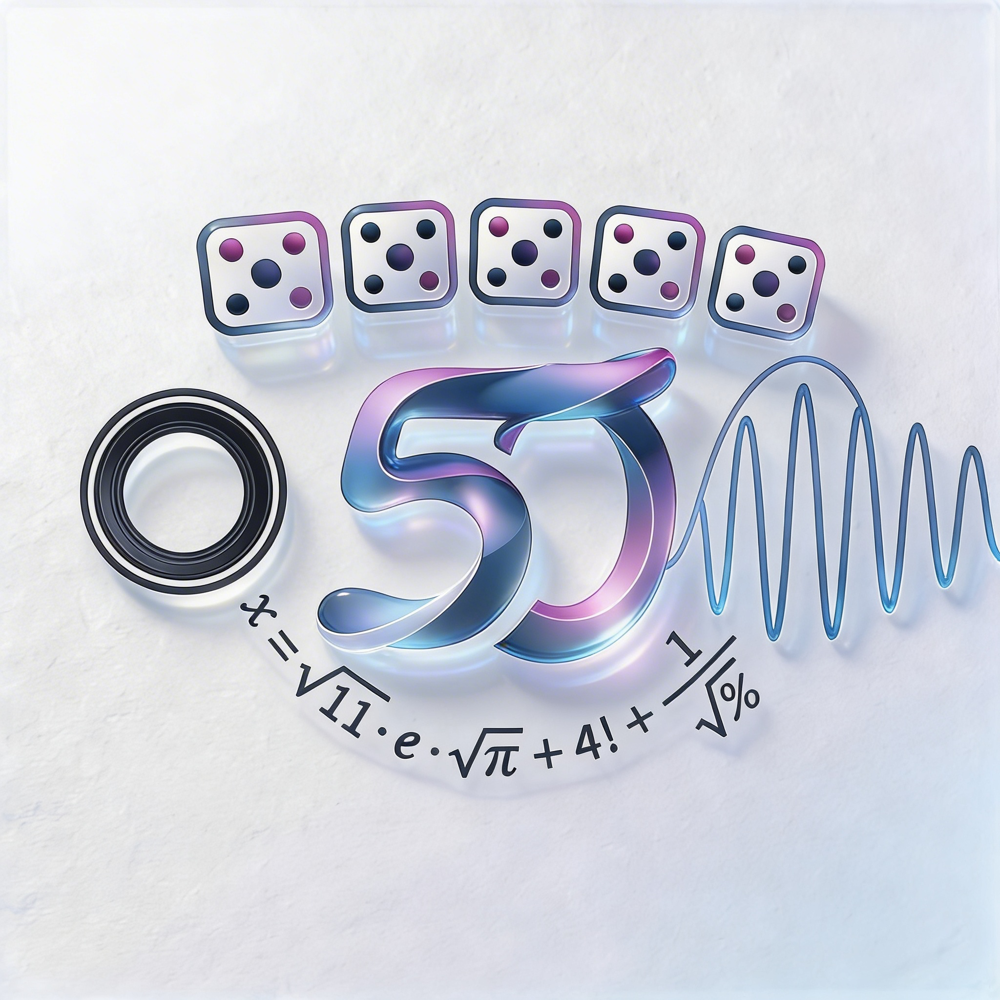

Du bist dabei – wenn du möchtest.Das feiern wir am 19. Juni 2027 im Kulturpalast Hamburg
Angaben gemäß § 5 DDG (Digitale-Dienste-Gesetz)
Roy Brinkmann
Marienthaler Straße 9b
20535 Hamburg
Kontakt:
E-Mail: roys_konzert_2027@gmx.de
Hinweis: Diese Website dient ausschließlich der Organisation einer privaten Veranstaltung und verfolgt keine kommerziellen Zwecke.
↑ Zurück